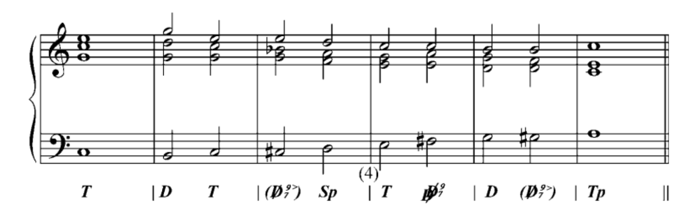
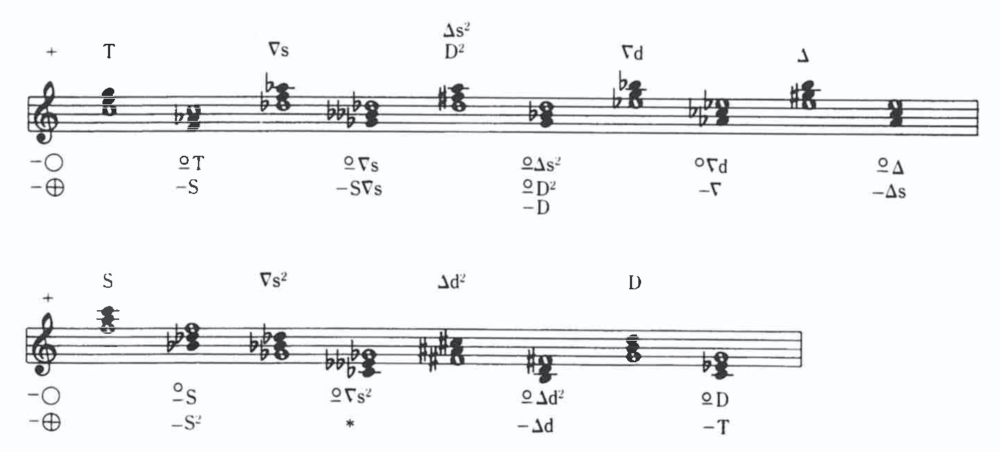
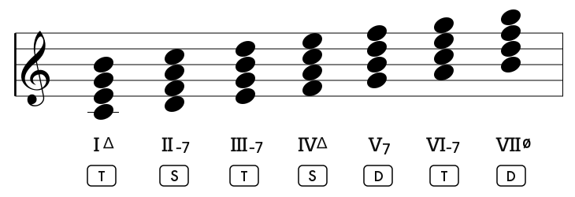

1. 功能论发表后的反响
1. 功能论发表后的反响
在上一篇中，我们确认了里曼本人所倡导的“原作”的概要。接下来，我们将看看里曼提出功能和声论之后的世界。人们究竟是如何看待功能和声论的呢？
实际上，本应具有划时代意义的里曼理论，虽引起了一阵讨论，但无论是理论家还是音乐家，大多并不太买账。里曼的学生之一德克·哈格曼斯（Dirk Haagmans）在自己的理论著作序言中曾发出这样的感叹：
Almost twenty years have elapsed since the publication of this marvellous Riemann work with its many new and most beautiful musical theories,—and it is astonishing that this book, containing true revelations respecting Harmony, is known so little and used extremely seldom by musicians.
距离里曼出版那部在诸多方面焕然一新、且无比优美的绝妙音乐理论著作已经过去了大约20年，——令人震惊的是，尽管这本书包含了关于和声的如此多令人惊叹的真知灼见，却几乎鲜为人知，音乐家们更是极少使用它。
Dirk Haagmans – Scales, Intervals, Harmony
读来仿佛能看到他沮丧的神情。里曼记法未能普及的原因之一，当然是符号过于复杂。对手维也纳乐派的庞大影响力也是重要因素。不过还有一个极其重大的原因，那就是里曼急于对自己的理论进行科学证明，结果惨遭滑铁卢。
里曼与科学
音乐理论界一直肩负的使命之一就是“用科学阐明音乐现象”。这是从毕达哥拉斯时代起就从未改变过的追求。里曼也不例外，试图用科学方式来构建和弦理论。然而这并未成功，最终导致他提出了这样的主张：

Fugo Riemann - Musikalische Logik (p.12)
虽然在声波上作为听觉对象并不存在，但只存在于我们感官之中的声音——“下方倍音（下泛音）”，包含在所有的声音之中……！！[5]
“有一种虽然听不见但能感受到的声音”。这理所当然引发了轩然大波的“舆论翻车”，遭到学者们的一致否定，到了21世纪的今天甚至被斥为“荒诞无稽的胡话”[1]。
而《Harmony, Simplified》也是基于这一信念写成的，因此遭受了“从根本上就不可信”的严厉批评。
对设计也造成了巨大影响
里曼的科学思想对功能和声的设计也产生了巨大的（负面）影响。简而言之，里曼的音乐科学是将大和弦与小和弦视为“完全的上下对称”。

只要把小和弦像这样上下颠倒过来看，它就和大和弦一样是“大三度、纯五度”的堆叠。二者互为镜像。大调与小调的对称性，是通过数学推导出来的自然规律。虽然这个解释稍有简化，但这种上下对称的构想正是里曼倡导的和声二元论（Harmonic Dualism）的核心观念。
里曼执念于这种上下对称，甚至认为根音的概念也是上下颠倒的，小和弦的根音其实是五音（5th）。

简直太疯狂了。简直让人觉得“疯狂”这个词就是为了今天此时此刻而发明的。英国学者马修·夏洛（Matthew Shirlaw）在1917年的著作中调侃道：“他或许以为自己把和声科学变‘简明’了，但因为学生们理所当然无法理解的这个‘五音作为根音说’，反而把事情变得‘复杂’了”，在调侃书名（Harmony, Simplified）的同时，展开了极具礼貌却犀利的反驳[2]。
正因为执拗于这种“上下对称理论”，符号系统理所当然变得异常繁琐，每一次解释都费尽周折，最终导致理论的信誉一落千丈……
2. 里曼遗志的继承者们
当然，其中也有人觉得里曼的符号体系颇有可取之处。但这套“小和弦五音为根音说”终究难以为人接受，以赫尔曼·格拉布纳（Hermann Grabner）及其弟子威廉·马勒（Wilhelm Maler）为中心的两人，大体摒弃了这种“二元论”，在此基础上对符号体系进行了改良[3]。

Edward Gollin, Alexander Rehding – The Oxford Handbook of Neo-Riemannian Music Theories (p.10)他们完善的符号体系在日文文章中也有整理总结，可以一睹其全貌（非常值得感谢）。这种风格在德国国内似乎有一定程度的应用，但里曼希望使其成为和弦符号世界标准的梦想至今仍未实现。
新里曼理论
而另一方面，也有人精准地看中了里曼理论的局部。例如，将 C 走向 Em 的进行不再看作“根音上行三度”，而是看作“仅仅一个音的变化”，这种思路不是很有意思吗？在里曼的理论中（算上后续的著作），提出了以下三种操作作为“基本操作”：
- Variante（英：Parallel） 同主音关系的转换。C 变为 Cm 的变动，反之亦然。
- Parallele（英：Relative） 平行调/关系调的转换。C 变为 Am 的变动，反之亦然。
- Leittonwechsel（英：Leading-Tone Exchange，导音交换） 将根音（Root）下移半音，以此作为另一个和弦的五音（5th）的转换。C 变为 Em 的变动，反之亦然。
由于这些操作并不依赖于调性，在分析近代复杂的音乐时是否非常优秀呢？在里曼去世后、20世纪后半叶，其价值得到了重新评估，并以新里曼理论（Neo-Riemannian Theory）之名再度兴起。

这也是一套相当硬核深奥的理论，我们将在后续文章中专门进行探讨。
负和声
此外，也有人被里曼和声二元论中将大调与小调平等对称看待的理念深深打动，试图对此进行改良，构建出更令人信服的形态。在这项课题上倾注心血的学者之一，就是瑞士音乐学者恩斯特·莱维（Ernst Levy）。
为了解决“五音为根音问题”等缺陷，他引入了“重力（gravity）”和“潮流（current）”等概念，试图让里曼的理论更进一步。 然而，写于1940-41年的手稿受第二次世界大战影响未能出版，在未见天日的情况下，莱维于1981年离开了人世。
Ernst Levy (1895-1981)
不过，他的一位友人发现了这份手稿，并委托莱维在芝加哥大学的前同事西格蒙德·莱瓦里（Siegmund Levarie）负责编辑出版。莱瓦里本人与莱维私交甚笃，且出版过使用里曼式符号体系的理论书，同时也认为在调性音乐崩塌的现代，应该存在一种更具包容性的调性概念[4]。对莱瓦里而言，这份编辑委托可谓正中下怀。他欣然接受，并在莱维逝世4年后促成了该书的出版。

Ernst Levy – Theory of Harmony (p.78)然而，由于这已是40年前的老思路，加上处于手稿阶段，且符号体系如上图所示非常繁复，内容也带有浓厚的观念化与主观臆测色彩，他的理论并没有掀起太大的波澜，莱瓦里也于2010年离世。
年轻时期的 Siegmund Levarie (1914-2010)
原本以为莱维的理论就会这样被遗忘在时代的缝隙中，然而2017年迎来了转机。音乐人雅各布·科利尔（Jacob Collier）拾起了这套理论，并以负和声（Negative Harmony）的名字将其介绍给世人。
雅各布·科利尔是一位荣获多项格莱美奖的知名音乐家，这个视频引起了极其热烈的讨论。他完全没有提及复杂的记号或数学计算，而是巧妙地运用“重力”等关键词，以一种更加简便、实用的形式介绍了莱瓦里的理论，并将理论与听觉情感紧密结合起来讲解。这正是身为艺术家而非纯学者的他才能做到的事情。
极具象征意义的是，当时有人提问：“那从功能和声的角度来说这是什么意思呢？”，对此他回答道：“关键不是去把握功能，而是去把握重力，思考情感”。仔细想想，“功能”也好，“重力”也罢，追根溯源都源自里曼那套理论的根基。由此可见里曼对后世的影响有多么深远。
不过话又说回来，那些受雅各布·科利尔风趣洒脱的谈吐启发而去买莱维原著来读的人，想必会被其晦涩艰深折磨得抱头苦思吧……

- A Theory of Harmony
- Ernst Levy (著), Siegmund Levarie (编)
- 在亚马逊查看
在阅读这本著作之前，如果先翻翻《和声探求的历史》这类理论史书籍，了解扎利诺（Zarlino）、拉莫（Rameau）、里曼各自提出的理论脉络，就会觉得“这个想法来自扎利诺啊”、“这就是里曼理论本身嘛”，内容理解起来就会连贯得多。
现在，让我们再次回到原本的功能和声论话题。虽然在德国，多亏了马勒等人“忠于原作的重制”，里曼的功能和声至今仍保留着最初的雏形流传下来，但在日本和美国，正如上一节所述，它经历了各种随意篡改。
对我们来说，终究还是希望能够在罗马数字记谱法与功能和声之间找到平衡。如果能明白各个流派是如何利用“功能”的，在阅读不同书籍时就能更自如地切换思维模式。从这里开始，我们将确认目前在日本广为人知的各流派是如何吸收和融入功能这一概念的。
3. 古典乐派与功能论
即便里曼的科学论证“荒诞无稽”，但“把和弦还原为 TDS 这一符号”的构想本身十分出色——一眼看中这一点的，不是别人，正是岛冈让。
《和声》的见解
- 和声——理论与实习 (1)
- 岛冈 让
- 在Amazon上查看
这本于 1960 年代作为东京艺术大学（艺大）教科书编写的《和声——理论与实习》，如你所知，采取的是把所有和弦归入 TDS 三群的方针。许多读者大概都把这当作理所当然读了下来，但注释里其实写着这样的话：
在传统的功能和声论中，一般多将 T・D・S 分别用作表示 I・V・IV 三个和弦的符号，但本书将它们用作“具有共同功能的和弦组”的概括性功能名称。
岛冈让 – 和声——理论与实习 (1) (p.37)
这句话被悄悄写在书页下方，但如今已经知晓里曼“原作”的你，应该明白这是何等重大的“原作改动”了吧。日本之所以形成“TDS 就是组名”这一印象并如此根深蒂固，这本书的存在恐怕是相当大的要因之一[1]。
如今这本书被看作“死板的古典”，但从当时来看，它其实是一本贯穿了极其革命性的立场、相当“敢于进攻”的理论书。维也纳的罗马数字、里曼的 TDS，再加上用于转位形态的、在英美零星可见的数字式记法[1][2]。从中可以窥见一种想要完成“集大成”式符号体系的意志。
顺带一提，岛冈和声对从同主小调借来的和弦，会在罗马数字左侧加上“○”标记；仔细想想，这与里曼的“原作”完全一致。或许其中正暗含着对里曼的致敬。
岛冈和声与 III 级和弦
那么，在“岛冈式定制功能和声”中，作为关键角色的 III 级和弦又是如何被处理的呢？
在 III 所具有的两种功能（T・D）之中，T 功能被认为源自原本在 Ⅰ→Ⅳ（II1）进行时作为经过性偶成而产生的 III。（中略）另一方面，作为 D 和弦的 III，则被认为是并不具备这种偶成性格的真正 III。
摘自《和声——理论与实习 (3)》p311
这与里曼的说明如出一辙。也就是说，他们废除了“多重记号化”，却没有废除“语境依存性”。这既有继承里曼见解的一面，也因为古典理论本来就是本质上重视语境的理论。
从肯定的角度看，这是一种“混合处方”：以级数记法为主保持明快，同时另设一处框架引入功能论，从而也为对 III 的多态性抱有疑问的人提供了答案。但拒绝多重记号化的结果，也确实难以否认招来了“功能论无法确定 III 的功能”这类误解。
“传话游戏”的发生
在这里，“III 是两种不同和弦中的某一种，究竟是哪一种要从前后关系来判断”这一说法，变成了“III 所具有的两种功能”。

这种谁都不会在意的微小差异，在经历上百次、上千次“传话游戏”之后，终究会变成巨大的差异。原本只是带着“根据前后关系显现出其中某一边的功能”这一语感写下的内容，却有人扩大解释为 III“同时”具有“双重功能”，想必也有人把它理解成了“中间”。于是，“双重功能说”与“中间功能说”就此诞生。
《明解和声法》的见解
只看一本未免不够，我们再来看看比《和声》更晚出版、由大阪音乐大学的教授们编写的《明解和声法》。
- 明解和声法〈上卷〉——献给立志音乐的人们
- 植野正敏（著）、铃木英明（著）、水谷一郎（著）、久保洋子（著）、永田孝信（著）
- 在Amazon上查看
下卷中有这样的记述。
关于 III 的功能
III 级和弦与 I（T）、V（D）和弦之间各自拥有两个共同音，因此当它接下来进行到 IV 或 II(6) 时，可认为它具有主功能；进行到 VI 时，则具有属功能。
摘自《明解和声法〈下卷〉——献给立志音乐的人们》p92
（顺便补充一句，这里的 II(6) 并不是“附加六度和弦”，而是六和弦、即第一转位。）
这本书同样继承了里曼的见解。“功能随进行方向而变化”这种说明方式，可以说更接近里曼原本的想法——“从语境判断意义”。
“逻辑跳跃”的发生
另一方面，这里的说明同样埋下了“传话游戏”的火种。书中说“由于拥有两个共同音”，但里曼其实并未把共同音当作同功能的“依据”。作为结果论两者几乎是一回事，但逻辑的搭建方式并不相同。不难想象，这类措辞后来也被用于对功能论的扩大解释。
不过，这种“共同音式分类法”并非《明解和声法》首创，而是各处理论书中都有的说法，因此我并无刻意贬低这本书的意图。只是就这样，随着它被一点一点地扩大解释，其逻辑自然越来越薄弱、矛盾越来越多，而里曼原本想要构建的功能论面貌也随之逐渐丧失。
这样梳理下来可以发现，古典流派并没有打算把 III 的功能归结为唯一一个。在已经了解“原作”的现在，这一点也就能顺理成章地接受了。和声学本来就重视前后关系，“不依赖语境=优秀”这种价值观从一开始就不存在。“后续若是 VIm 则为 D，若是 IV 则为 T”，除此之外根本没有再反复折腾的理由。
由此可知，日本的古典派理论在 IIIm 的见解上大致原封不动地继承了里曼的想法，但其中也包含了各种简化与扩大解释的种子。
4. 爵士系流派与功能论
另一方面，在爵士理论这一谱系中，功能论也被做了独自的定制。爵士理论中对自然音阶和弦（Diatonic Chord）的分类基本上如下。


有些混入古典流派的书籍会介绍偏向古典派的见解，但基本上无论看哪本书都是这一套[1]。
把 TDS 用作概括性的组名，这一点与岛冈和声相同。值得注意的是，作为关键角色的 III 级和弦只被归入 T。这已不只是“简化”，而是把里曼首先提出的“作为属功能的 III”完全否定了。
与继承里曼见解的古典派不同，爵士理论把 III 视为主功能。这时会浮现出两个疑问：他们“如何”定义功能，又“为何”这样定义。先来确认前者。
爵士流派中的 TDS 定义
即便在爵士流派内部，TDS 的定义方式也绝非铁板一块；不过在那种认真按理论方式讲解的爵士理论书中，会这样定义 TDS[2]。
- D：含有 Fa，且含有 Si
- S：含有 Fa，但不含 Si
- T：不含 Fa
按这一定义分类，IIIm7 不含 Fa，所以就是主功能。它也常被解释为“IΔ9 的根音省略形态”[3]。不知不觉间，爵士的世界里诞生了里曼原作中完全没有的“倾向音式分类法”[4]。
另外请注意，这里的 T 功能是以消极的方式被定义的。也就是说，整体流程是：不满足 D 或 S 条件的，就自动归为 T。所以爵士理论把 IIIm7 当作 T，与其说是因为它稳定感如何、或作为 IΔ7 的代理如何，不如说更像是“因为它既不是 D 也不是 S”这种“排除法”的逻辑在起主导作用。
爵士原创的功能论
想必爵士流派对里曼的敬意并没有古典流派那么深吧。TDS 这个符号我们收下了，但凡对自己不必要的东西统统砍掉，只考虑怎样才能让功能论在展开爵士理论时更具实践性与实证性，于是把功能论重新做了一遍。
胡戈·里曼
那个……III 级和弦其实表面看上去虽然一样，但它里面的东西绝不是同一回事；所谓功能，是和弦的意义，所以并不是光靠和弦音的构成就能定下来的……

咦，里曼先生您这是怎么了？又来散播荒诞无稽的胡话了吗？很不巧，我们的理论打交道的只有听得见的音呢。
胡戈·里曼
🥺🥺
那么，爵士理论“为何”要在这样的定义之下对功能进行分类呢？其中受到爵士特有的技法与音乐性的极大影响。
三全音的神格性
以 ii-V-I 终止式为根基、把属和弦解决（Dominant Resolution）当作理论发展原动力的爵士理论，一旦被问到“属功能的原动力是什么”，答案里“三全音”会排在作为根音的“属音”之前。正因为有这个前提，才会产生把 V7 替换为 ♭II7 的构想。

♭II7 并不含有属音，但三全音保留了下来。而凭借这份三全音的力量，它优美地解决到 IΔ。三全音才是属功能的真身——“Dominant”这个词追根溯源本是表示“属音”的词，爵士理论却大胆地把属功能的根源从“属音”改写成了“由 3rd 与 7th 构成的三全音”。
对爵士理论而言，三全音的重要性难以估量。如上所述，它既是让“三全音代理”正当化的原理；而之所以能在变化属和弦（Altered Dominant）上叠加过激的引伸音，也正是因为有三全音解决所带来的紧张→松弛原理才被允许。由此想来，让那种做不出任何“属和弦式操作”的 IIIm7 被称为 D 功能的世界线，在爵士之中是不可能存在的。
调性确定能力的差异
对于转调频繁的爵士来说，属七和弦是特别的。因为它有一个重大特征：属七和弦为各调所固有，不会与他调的自然音阶和弦共享。
也就是说，C 调的属七是 G7，其构成音为 Sol・Si・Re・Fa，所以它绝不可能在其他调中成为自然音阶和弦。毕竟 Si 和 Fa 是最先会被加上升降记号的音。

也就是说，属七和弦在确定那一瞬间调性的功能上具有压倒性的强势。
Em7 的构成音是 e、g、b、d，实际上可以在 C 调、G 调、D 调这三个调中作为自然音阶和弦使用。当然，调性大体上会由音阶的叠法产生，但响起那一瞬间的“调性确定力”，终究弱得无法与 G7 相比。所以在调性摇摆的爵士里，G7 所拥有的意义就格外强。
说白了，对爵士而言只有属七和弦才是路标。放在它前面的即“前属和弦（Pre-Dominant）”，放在它后面的即“主和弦（Tonic）”。这样理解，才更容易看清爵士理论的整体面貌。把 IIIm7 视为主和弦的判断，也与这种价值观相吻合。
关于频繁转调中和弦品质的重要性，详细研究了“功能”一词解释变迁的论文中也有指出。
Quality is an essential component of the circle-of-fifths aspect of jazz harmony. (…) The example illustrates that in the major system, major seventh chords are native to tonic (and also subdominant), minor seventh chords are native to supertonic (and also mediant and submediant), and dominant quality seventh chords are native to dominant. (…)
In language of jazz, therefore, quality influences preference rules for determining status distinctions in a way that it does not for Classical diatonic tonality.
和弦品质是爵士和声五度圈（Circle of Fifths）层面不可或缺的要素。（……）这个例子表明：在大调体系中，大七和弦首先属于主和弦（或下属和弦），小七和弦首先属于上主和弦（或中音、下中音），而属品质的七和弦首先属于属和弦。（……）
因此在爵士的语言中，和弦品质会作为高优先级事项影响状态区分的判定，而这在古典的自然音阶调性中是不曾有过的。
John Gabriel Miller – THE DEATH AND RESURRECTION OF FUNCTION (p.125)
在频繁转调、难以一眼看穿和弦级数的世界里，识别展开的最大标记就是和弦品质。对于在响起的瞬间就能立刻提示并确定“属和弦感”的 V7，IIIm7 因为具有小七和弦（Minor Seventh）这一品质，反而处在弱到容易被误解为下属和弦（IIm7）的立场上——在这里，V7 与 IIIm7 之间同样产生了巨大的落差。
仔细想想，当理论的基础从三和弦改为四和弦、并把大七和弦视作无需特别关照的稳定和弦那一刻起，或许就已经不可能原封不动地继承依托古典历史脉络的里曼功能理论了。
可以说，功能和声论的“改动”恰恰体现了自由派从序论起就一直主张的那句话——“音乐风格变了，与之相称的理论风格也会变”。
向“代理”的扩大解释
重新定义了属功能、并把 IIIm7 归入 T 之后，爵士理论注意到了新的可能性。那就是“只要功能相同，任何和弦都可以代理”这一构想。这当然是原作中没有的方法论，也是在逐个和弦讨论具体声部连接的古典流派中很难被一般化的部分[5]。
把 IIIm7 归为 T 的判断在这里同样发挥得极为出色：“3-6-2-5”是“1-6-2-5”的变体，“4-5-3-6”是“4-5-1-6”的变体——就这样成功地把定番和弦进行整合了起来。
IIIm7 VIm7 IIm7 V7
反过来，最为基本的“2-5-1”却怎么也换不成“2-3-1”，于是“所以 IIIm7 还是应该当作主和弦”这一说法，进一步提高了“III 级和弦＝主功能说”的实证性。
无可替代的绝对王者 V7，与只是偶尔被叫来充当 IΔ7 替角的 IIIm7……
里曼设计的原作，是让大调与小调美妙对置的“上下对称之美”的理论。然而与这份意志相反，在爵士的世界里，TDS 被当作崇拜 V7 这唯一神明的符号来使用。

实际上，美国的音乐理论家中就有人主张：真正代表 S 功能的不是 IV，而是 II 级和弦[6]。也就是说，他们把“以五度向 T 连去”的形态，而非“用五度环绕 T”的形态，视作调性的基本原动力。

这么一说，两种学说确实同样有力。尤其对于以 ii-V-I 为基本型的爵士来说，更是如此。
“倾向音式分类法”的界限
然而这种“倾向音式分类法”并非由原理推导而来，而是为了让 I～VII 的自然音阶和弦都能顺利分类、从仅仅 7 个事例归纳出来的“事后追加”定义，因此在应用性和弦的分类上就露出了不少破绽。
- IVΔ(+11) 会含有 Fa 与 Si，那么是否无视引伸音而将其归为 S 的问题
- IΔ7sus4 的“和弦音”姑且会含有 Fa 与 Si，那么是否把它归为 D 的问题
- 走向 III7 的 VIIø 是否能算作 D 的问题
- 在混合利底亚（Mixolydian）语境中产生的 Vm7-I 要算作 S–T 进行，这样是否可行的问题
- ♭VII7 与 ♭VIIΔ7 也要算作 S，这样是否可行的问题
- ♭II7 归为 D、♭IIΔ7 归为 S 这种分裂方式，这样是否可行的问题
另外需要留意的是，这个定义是否本来就打算套用到调外和弦上，本身就不明确。对于像 ♭VII 这样棘手的和弦，他们也会很平常地说出“功能暧昧”之类的话。
此外还有诸如“当 V7sus4 不经 V7 直接解决到 IΔ 时，虽然不含 Si，但例外地将其视为 D”[7] 之类的处置，可以看出他们终究只想把 SDT 当作“二五一”（Two-Five-One）终止式抽象化后的符号来使用。
双重功能（Dual Function）
还有一个爵士独有的概念也诞生了。就是第 VII 章“二五进行的应用”中介绍过的 Related IIm 的功能问题。

这个 IIIm7，既可以看作单纯的自然音阶和弦，也可以与后续的 A7 合起来看，视为暂时转调到 D 大调（或 D 小调）的世界。第 VI 章没有介绍过，这种功能不确定的状况，在伯克利系理论中称为双重功能（Dual Function）。调性的重叠带来功能的重叠。这样的认识方式，与主张“转调的本质正在于功能的转换”的里曼的想法也有相通之处。
实际上，只要看叠在它上面的音阶，就能把功能确定到“其中一边”；但同样，想必也有人把它解释为 III 在“单一调性内”“同时”具有“两种功能”。
在“岛冈和声”之外的另一个流派里，以另一种含义，奇巧地是在同一时期，同样的“双重功能”这一构想的种子也萌发了。
定义的“感觉化”
在这里同样也存在着“传话游戏的种子”——“功能”一词被不断扩大解释。
- The Berklee Book of Jazz Harmony
- Joe Mulholland (著), Tom Hojnacki (著)
- 在Amazon上查看
这是一本伯克利系真正地道的书籍，解说了自然音阶和弦的全部 42 种连接，因此也是在“连接系（Nexus）”理论的参考文献中派上用场的名著。书中对功能有如下说明。
Throughout this book we will use the word “function” to describe a chord’s stability relative to other chords within a piece of music
本书通篇使用“功能”一词，是为了说明某和弦相对于曲中其他和弦时的相对稳定感。
Mulholland, Joe. The Berklee Book of Jazz Harmony (p.3).
这里做了很郑重的限定——“本书中用来描述稳定感”；但当然也会有人读后理解为“功能就是表示和弦稳定感的词”。继“共同音式分类法”之后，“稳定感式分类法”就此诞生。
而随着时光流逝，到了谁都已忘记里曼定义的今天，便进一步演变成“IIIm 其实也没那么稳定吧？绝对不算主和弦啊……”这类把定义抛到一边的感觉之争。
5. 中心轴系统
最后必须提一下的，是埃尔诺·伦德瓦伊（Ernő Lendvai）的“中心轴系统”。

中心轴系统的功能分类定义是“由根音唯一确定”这一激进的做法。可以说是最强烈的“原作改动”了。而在已了解里曼原作的现在，也能清楚看出这不过是“把功能论改动到只剩 TDS 三个字之后，再进一步改动的东西”，以及它建立在多么危险的逻辑基础之上。
中心轴系统与 III 级和弦
就 III 而言，很遗憾，中心轴系统根本登不上讨论 III 级和弦的舞台。因为它存在“根音决定问题”。
- 中心轴系统的根音决定问题：中心轴系统能够由根音唯一地确定功能，但并未给出唯一确定根音的方针。
III 级和弦若照原样看，根音是 Mi；若看作“IΔ7 的根音省略形态”，根音就是 Do。这里就需要有一个见解，但正如本文所述，伦德瓦伊回避了对根音省略的谈论。结果在这方面只能沿用“系统之外”的见解，所以对于 III 的功能确定，中心轴系统完全派不上用场……
不过，这里又产生了“根音式分类法”，无疑又增加了一颗混乱的种子。更何况对于不了解古典传统中“根音省略形态”概念的人来说，想必也有人解释为“按中心轴系统，IIIm 的功能就定为 D”吧。
向调外的扩展
另外，积极地推行包含调外和弦在内的功能指派，也是中心轴系统的特征之一。
里曼原作中的功能，全部都是在“调内”这一前提下构建的。所以例如II 终究是“属调中的属和弦”，而不是下属和弦。II 与 IIm 的意义大不相同——这就是原作的立场。
伯克利派也稳妥地继承了这一点，II7 等副属和弦们被表述为“V/V”，并被说明为“属和弦的一种”[1]。
中心轴系统试图用“轴”的理论来统合过去这种以“临时转调”处理的部分，但结果却让“用转调处理的领域”与“在调内处理的领域”之间的界限变得越来越模糊，这一点多少有些罪过深重。
取决于怎么看，对于 C–Am–D7–G 这样的进行，也能借助中心轴系统来主张与它自身理念正相反的内容：“这个 D7–G 的段落由于临时转调使 G 作为主极发挥作用，所以这个 D7 是属和弦”。伦德瓦伊本人就留下了这样的“留白”。
这种“未被明言的部分”的存在，也可以说是助长功能论解释摇摆的原因之一[2]。
6. 功能论的总括
好了，围绕功能论的动向其实还有无穷无尽。不过，追踪了几个代表性的动向之后，我想你已经能够理解现今各种内容中所见的 TDS 解释摇摆了。原作思想的消亡、从“3 种类”被削减为“3 个”的功能，以及因扩大解释而诞生的各种学说与种种定义方式……
- “双重功能说”的诞生
- “中间功能说”的诞生
- “代理可能说”的诞生
- “共同音式分类法”的诞生
- “倾向音式分类法”的诞生
- “稳定感式分类法”的诞生
- “根音式（五度圈式）分类法”的诞生
而其中没有任何一项是里曼所提出的——这一史实应当牢记。
我们与功能论的相处之道
然而真正麻烦的，是站在这段分裂与扩大之历史尽头的我们与功能论相处的方式。本文一直把这类派生称为原作的“改动”，语气上像是坏事，但若从历史潮流来看，这样的变化也未必全是坏事。
把 TDS 用作组名这一构想，有着难以舍弃的便利性；事到如今再搬出 120 年前的“原作”、主张就该照着它来用功能论，也已经不现实了。到了被如此扩大利用的今天，就连“原作才是对的”这一主张也不能无条件地说成正确。
说到底，我们只能在接受这种摇摆的前提下接触各种内容。读理论书时留意这些差异；而在自己使用功能论时，就按与自己理论观相符的形式去活用它，或者干脆不用。
如何对待其他学说
尤其需要注意的是，对持有与自己不同见解的人或内容进行批判的方法。若不弄清对方在功能论中采用了哪种学说、哪种分类，就无法做出正确的批判。
例如，对于以“代理”逻辑为核心采用的体系，把 IIIm 视作 T 是有妥当性的；但对此搬出“稳定感式”来批判“IIIm 并不稳定”，那就是莫名其妙了。

又或者，对于采用“根音式”逻辑的体系，把 IV 与 II 都归为 S 是理所当然的；但对此搬出“共同音式”说“IV 和 II 之间只有两个共同音，这不是矛盾吗”，同样也是文不对题的批判。

把正因为矛盾才没采用、被丢掉的某个定义随随便便捡回来，然后说“看吧，这不是矛盾吗！”——这简直荒唐。也就是说，只有完全理解了对方所立足的立场、未被采用的论点，以及这个体系究竟为了什么而使用功能，通往正确批判的门才会第一次打开。
验证的阶段
不要忘记，自己“采用”某个体系的行为，与“主张某个体系是正确的”的行为之间，在分量上有着天壤之别。宣称其中某一个是对的，换言之就是否定某样东西是错的——这是极其沉重的行为。

对既有理论首先尝试彻底理解，这才是批判的出发点。只有理解了才能批判；如果以“这种东西根本无法理解”一口回绝，就无法沿着验证的 Stage 继续前进。
而大多数情况下，Stage3 的路程太长，在调查的过程中就理解了那个原本打算否定的体系深处的哲学，于是无论最终采用与否，都会得出“这本身也是一种‘正确’形态”的结论。就像这次我们理解里曼的想法一样。若还是理论世界清一色古典的 19 世纪末，那倒也罢了；在音乐已多样化的今天，试图把体系收敛为其中某一个这件事本身，大概就是徒劳的。不妨这样想：对体系的组建方式理解得越多，价值观就越丰富。只要不忘记“理论是可以换着拿的工具”这一意识，就不会被理论牵着鼻子走。